عن قرآني
يعتبر هذا البرنامج جامع للقرآن الكريم, حيث يمكنكم من قراءة القرآن الكريم, الإستماع إلى الآيات صوتيا, تفسير الآيات بمختلف التفاسير, إعراب الآيات, معرفة أسباب نزول الآيات, البحث في القرآن الكريم, وغيرها من الميزات التي يمكنكم التعرف عليها بكل سهولة.
ملاحظة :
هذا البرنامج هو وقف للاه تعالى, الرجاء حاولوا مساعدتي في نشره وإيصاله لأكبر عدد من المستخدمين كي تعم الفائدة, وأجركم على الله.
رجاءا لا تنسوني من خالص دعائكم
ميزات البرنامج
يعتبر برنامج قرآني برنامج جامع للقرآن الكريم, إذ يمكنكم من دراسة القرآن وحفظه والبحث في معانيه, حيث يوفر :
- قراءة القرآن كسور, صفحات, أجزاء, أرباع, أو أحزاب, ويمكنكم تخصيص ما تريدون فتحه من القرآن يدويا.
- الإستماع إلى القرآن الكريم بصوت العديد من القراء سواءا على الأنترنت أو يمكنكم تحميل القارئ الذي تريدون للعمل بدون أنترنت
- يمكنكم من الإستماع إلى نبذة من القارء المحدد قبل تحميله أو إختياره القارء الإفتراضي
- تكرار الآية أو المحتوى القرآني الذي تستمع إليه حالية وبالعدد الذي تفضله من التكرار
- معرفة الآية التي تستمع إليها حاليا إذ يقوم البرنامج بتحديد كل آية يتم قراءتها صوتيا
- قراءة القرآن سواءا بالخط العثماني أو الخط الإملاءي الحديث
- تفسير القرآن الكريم بالعديد من التفاسير حيث يحتوي البرنامج على :
- التفسير الميسر
- تفسير الطبري
- تفسير القرطبي
- تفسير إبن كثير
- تفسير البغوي
- تفسير الجلالين
- تفسير السعدي
- إعراب الآيات
- معرفة أسباب نزول الآيات
- معلومات الآية الحالية
- معلومات السورة التي تحتوي على الآية الحالية
- البحث في القرآن الكريم
- داعم لقارءات الشاشة والمبصرين على حد سواء
- يحتوي على إختصارات متعددة خاصة بلوحة المفاتيح لتسهيل الوصول إلى المهام
الشاشة الرئيسية للبرنامج
تحتوي الواجهة الرئيسية للبرنامج على المحتوى القرآني المختار بالإضافة إلى مجموعة من الأزرار التي تتيح لك الوصول للعديد من خيارات البرنامج.
حيث يمكنكم تفسير الآية التي عليها مؤشر الفأرة أو التي عليها مؤشر لوحة المفاتيح,, كما يمكنكم إعرابها ومعرفة أسباب نزولها.
هذا كله بواسطة الأزرار المتوفرة في الشاشة كما يمكنك الوصول للخيارات وأنت في مربع المحتوى القرآني وذالك باستخدام قائمة السياق سواءا بمفتاح التطبيقات أو بالنقرة اليمنى للفأرة.
تتوفر أيضا في الشاشة الرئيسية أزرار للبحث وحفظ الموضع الحالي وكذا فتح إعدادات البرنامج والوصول السريع لمساعدتك على التنقل.
يحتوي البرنامج على مجموعة من القوائم العلوية حيث توجد فيها مجموعة من الخيارات.
البرنامج
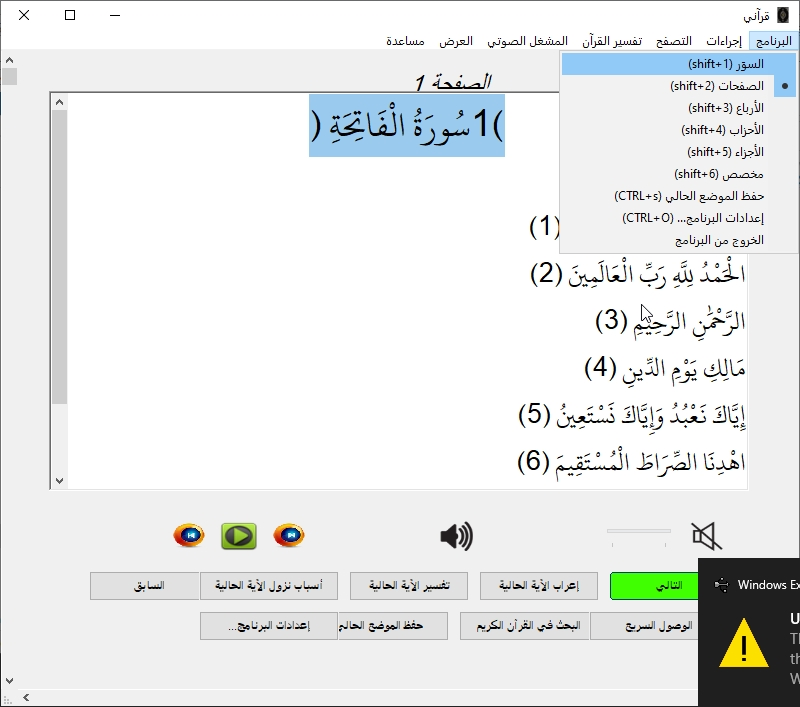
هذه القائمة تحتوي على التصنيفات التي يمكنكم من خلالها التحكم في طريقة عرض القرآن الكريم
حيث تحتوي على
- سور
- صفحات
- أرباع
- أحزاب
- أجزاء
- مخصص
حيث كل خيار منهم يفعل نمط في البرنامج كي يمكنكم التعامل معه
وبخصوص خيار مخصص فهو يتيح لك إختيار ماذا تريد أن تعرض داخل البرنامج
كما يمكنكم العثور على خيار لفتح الإعدادات وكذا خيار لحفظ الموضع, بالإضافة إلى خيار لغلق البرنامج.
الإجراءات
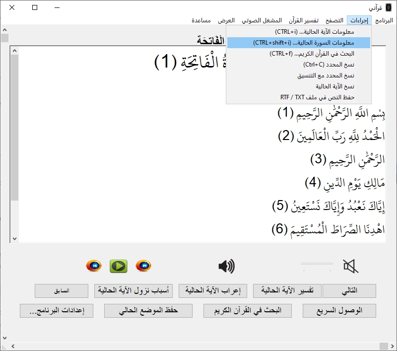
من هنا يمكنكم التحكم في محتوى النص, حيث يمكنكم نسخ الآية أو الصفحة ويمكنكم الحصول على معلومات الآية, بالإضافة إلى حفظ الصفحة في ملف منسق أو نصي.
التنقل
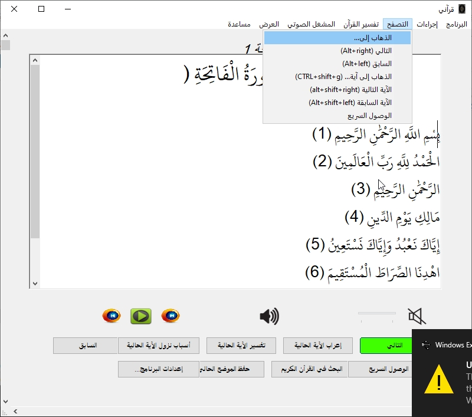
هنا يمكنكم العثور على خيارات تساعدكم في التنقل في النمط الحالي للبرنامج
التفسير
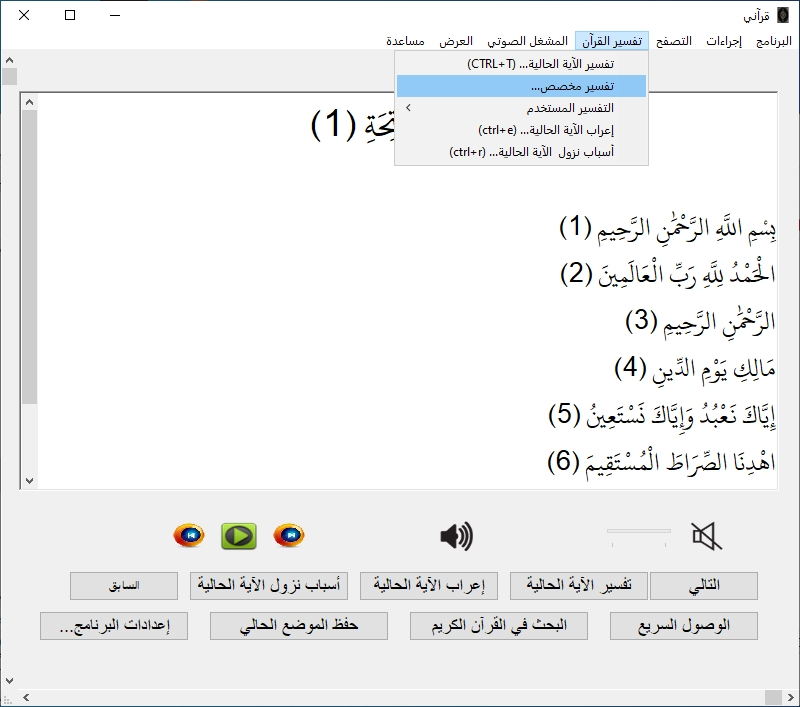
هنا يمكنكم الحصول على خيارات التفسير والإعراب وغيرها, كما يمكنكم تخصيص التفسير الذي تريدون إستخدامه
المشغل الصوتي
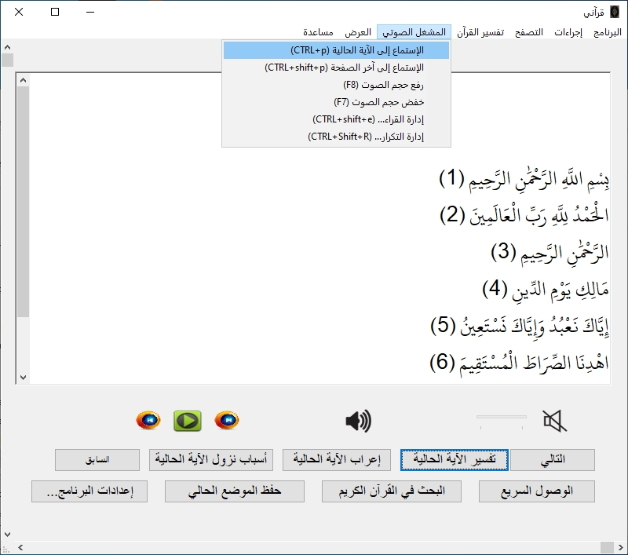
هنا يمكنكم العثور على خيارات للتحكم في التشغيل الصوتي, حيث يمكنكم إختيار القارء الإفتراضي أو تحميل قارء, كما يمكنكم التحكم في تشغيل الآيات صوتيا.
العرض
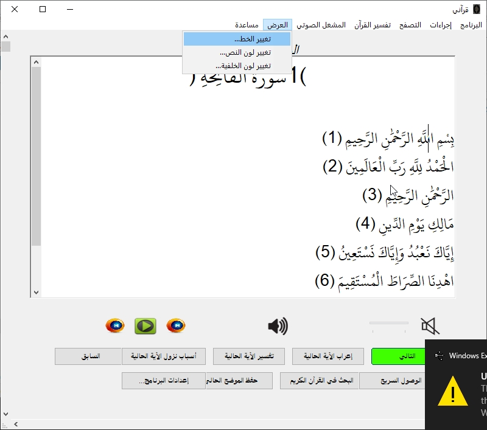
من هنا يمكنكم إدارة المظهر, حيث يمكنكم التحكم في نوع الخط المستخدم وكذا الألوان المستخدمة.
المساعدة
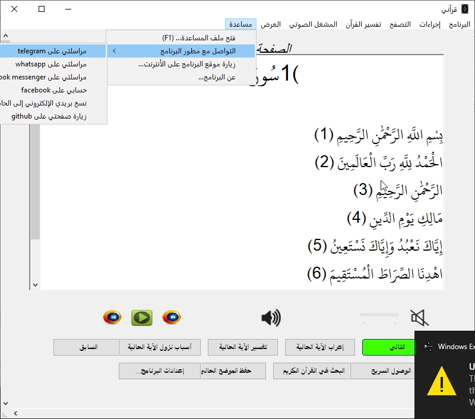
هذه القائمة تحتوي على وسائل الإتصال بالمطور, كما تحتوي على رابط الولوج إلى الموقع الإلكتروني, وتحتوي أيضا على خيار لفتح هذا الملف
واجهة البحث
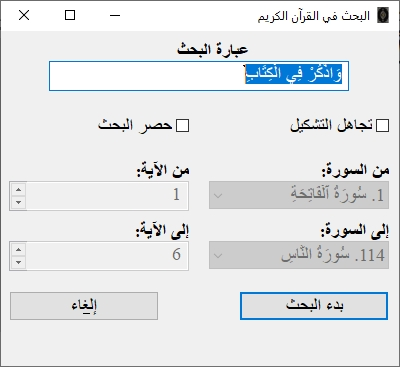
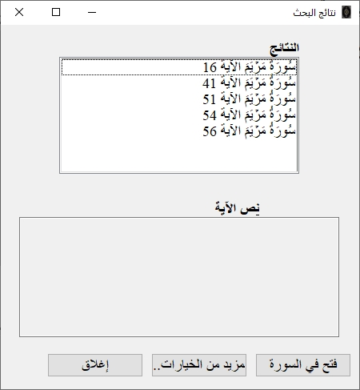
تحتوي واجهة البحث في القرآن الكريم على خيارات لمساعدتك على البحث حيث يمكنك كتابة العبارة التي تريد البحث عنها, ويمكنك تحديد ما إذا كنت تريد للبحث ان يكن حساس لتشكيل الحروف أو لا, البرنامج يقوم إفتراضية بمعرفة ذالك والتحكم في مربع التحديد حسب النص المكتوب, طبعا يمكنك التحكم في ذالك يدويا.
يمكنك أيضا حصر البحث, يفيد هذا الخيار إذا كنت تريد أن تبحث في مواضع معينة من القرآن فقط.
عند البحث وإظهار النتيجة يمكنك فتح الناتج في السورة كي تتمكن من قراءة ما بعد الآية التي تم العثور عليها وما قبلها.
ويمكنك أيضا تفسير الآية أو نسخها أو إعرابها من خلال الضغط على زر المزيد من الخيارات.
شاشة الوصول السريع
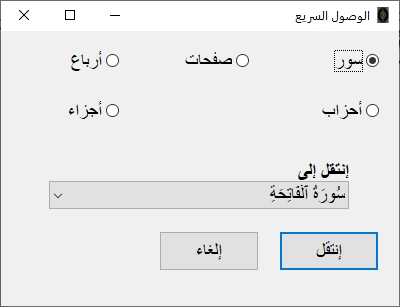
من هنا يمكنكم الإنتقال إلى أي مكان تريدونه داخل المصحف الشريف, حيث يمكنكم الإنتقال إلى أي ربع, حزب, صفحة, سورة, أو جزء.
شاشة الإعدادات
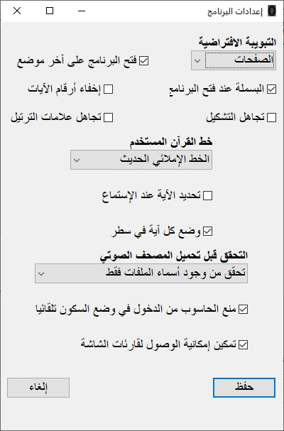
هنا يمكنك إدارة البرنامج, حيث تحتوي هذه النافذة على العديد من الخيارات التي تجعل تجربتك مريحة في استخدامك للتطبيق.
مصطلحات الإعدادات سهلة وبسيطة, حيث لا تحتاج لشرح في كيفية التعامل معها.
واجهة إدارة القراء
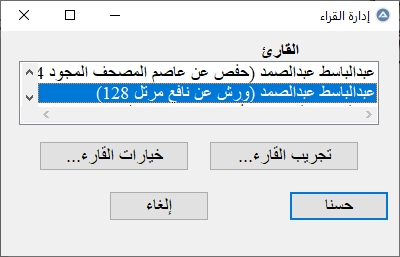
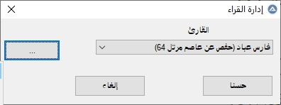
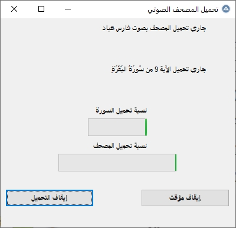
هنا يمكنك إدارة القراء, بحيث تختار القارء الذي تريد أن تسمع القرآن بصوته, ثم يمكنك جعله القارء الإفتراضي بحيث يعمل من على الأنترنت, كما يمكنك تحميل القارء للعمل بدون أنترنت أو حذف الحزمة المحملة, وذالك بالضغط على مفتاح التطبيقات أو زر الفأرة الأيمن, وأيضا يمكنك الضغط على الثلاث نقاط بجنب إسم القارء لتظهر الخيارات.
يمكنك بدأ التحميل وإيقافه وإستأنافه في أي وقت من نفس الشاشة.
إختصارات لوحة المفاتيح
فيما يلي مجموعة من الإختصارات الخاصة بلوحة المفاتيح داخل التطبيق
| الإختصار |
المهمة |
| control+o |
فتح نافذة الإعدادات |
| control+f |
فتح شاشة البحث |
| control+s |
حفظ الموضع الحالي |
| control+shift+s |
حفظ المحتوى في ملف منسق أو ملف نصي |
| control+t |
تفسير الآية الحالية |
| control+r |
أسباب نزول الآية الحالية |
| control+e |
إعراب الآية الحالية |
| control+i |
عرض معلومات الآية الحالية |
| control+shift+i |
عرض معلومات السورة التي تحتوي على الآية الحالية |
| control+g |
الذهاب إلى |
| control+shift+g |
الذهاب إلى آية داخل المحتوى المعروض |
| control+q |
فتح الوصول السريع |
| control+p |
تشغيل الآية الحالية |
| control+shift+p |
تشغيل من الآية الحالية إلى آخر الصفحة المعروضة |
| control+shift+e |
فتح مدير القراء |
| control+shift+t |
فتح إعدادات التكرار |
| f5 |
تشغيل الآية الحالية |
| f6 |
تشغيل من الآية الحالية إلى آخر الصفحة المعروضة |
| f7 |
خفض حجم الصوت |
| f8 |
رفع حجم الصوت |
| alt+سهم يمين |
الذهاب للتالي |
| alt+سهم يسار |
الرجوع للسابق |
| alt+shift+سهم يمين |
الذهاب للآية التالية |
| alt+shift+سهم يسار |
الرجوع للآية السابقة |
| i |
نطق معلومات الآية الحالية باستخدام قارء الشاشة |
ملاحظات
- في حال فتحت البرنامج ولم تعمل معك الإختصارات تأكد أن لوحة المفاتيح الخاصة بك ليست على اللغة العربية, إذا كانت كذالك قم فقط بتغيير لغة لوحة المفاتيح إلى أي لغة لاتينية وستعمل الإختصارات
- مع إستخدام برنامج NVDA قد يبدو البرنامج فيه بعض الثقل, هذا يعود لتَعارُض قارء الشاشة مع لغة البرمجة المستخدمة, لاكن يمكنكم استخدام البرنامج طبيعيا.
- في حال واجهتكم مشكلة في عرض المحتوى العربي أو نطقه بقارء الشاشة تأكدوا من أن لغة ال unicode في حاسوبكم معمولة على اللغة العربية
- لقد قمت بمراسلة معظم مطوري مضادات الفيروسات لعمل استثناء للبرنامج من قاعدة بياناتها, فلو حدثت أي مشكلة مع أي مضاد فيروسات ما عليكم إلا الإنتضار حتى تقوم الشركة بتحديث قواعد بياناتها, وإن طالت المشكلة يرجى مراسلتي بإسم مضاد الفيروسات ونوع الشبه الذي يعطيه لك, وسأقوم بإعادة مراسلة الشركة إن شاء الله.
- بالنسبة لمستخدمي قارئات الشاشة واجهة البرنامج باللغة العربية, فبالتالي التحرك بين القوائم يكون بالسهم الأيسر للذهاب إلى القائمة التالية واليمين للسابقة, كما يتم توسيع القوائم بالسهم الأيسر وليس الأيمن. وهذا كما قلت ناتج عن إتجاه النوافذ العربي (RTL).
- قارء الشاشة NVDA قد يقرأ الآيات المحددة إذا قمت بتفعيل نمط القراءة الصوتية, حيث كل آية يتم قراءتها ستحدد بشكل تلقائي, لو أردت أن تتجنب هذا يمكنك تعطيل ميزة تحديد الآيات من إعدادات البرنامج.
- البرنامج يرفق معه خطوط خاصة بالقرآن الكريم موجودة في مجلد fonts, حيث هو يقوم بإضافتها تلقائية إذا لم تظهر الخطوط أو حدث مشكل فقط قم بتثبيت الخطوط يدويا من المجلد وسيكون كل شيء على ما يرام
- يمكنكم البدأ في تحميل أي ملف صوتي وإيقافه, في المرة القادمة عندما تريد الإستأناف يكفي معاودة التحميل وسيبحث تلقائية على الملفات ويكمل من حيث توقف. هنا تجدر الإشارة إلى أن طريقة البحث عن وجود الملفات يمكنكم التحكم فيها من داخل الإعدادات.
خاتمة
ختاما يمكنكم متابعة شرح البرنامج بالفيديو من خلال الرابط التالي
استعراض وشرح مفصل لبرنامج قرآني الجديد مع ناصر بعزيز و أحمد بكر
حيث قمت أنا وأخي أحمد بكر بشرح البرنامج ومحاولة تغطية معضم ميزاته.
ملاحظة :
لقد قمت بإجراء جميع التعديلات المذكورة في الفيديو كما وعدت.
ولمن كان يملك أي إستفسار, إقتراح, أو يواجه أي إشكال لا تترددو نهائيا في التواصل معي على أحد الوسائل التالية
في النهاية لا تنسو أخوكم ناصر بعزيز من صالح دعائكم ولي والدي بالرحمة, كما لا تنسو من ساهم في البرنامج بأي إقتراح أو من قام بالتجريب أو حتى من ساعدنا ولو بكلمة طيبة.
ومن هذا المنبر أُوصل لهم شكري فردا فردا, جزاكم ربي كل خير وأنار خطاكم وثبتكم على دين الحق.
في النهاية أستودعكم الله الذي لا تَضِيع ودائعه ومسك الختام السلام فالسلام عليكم ورحمة الله وبركاته